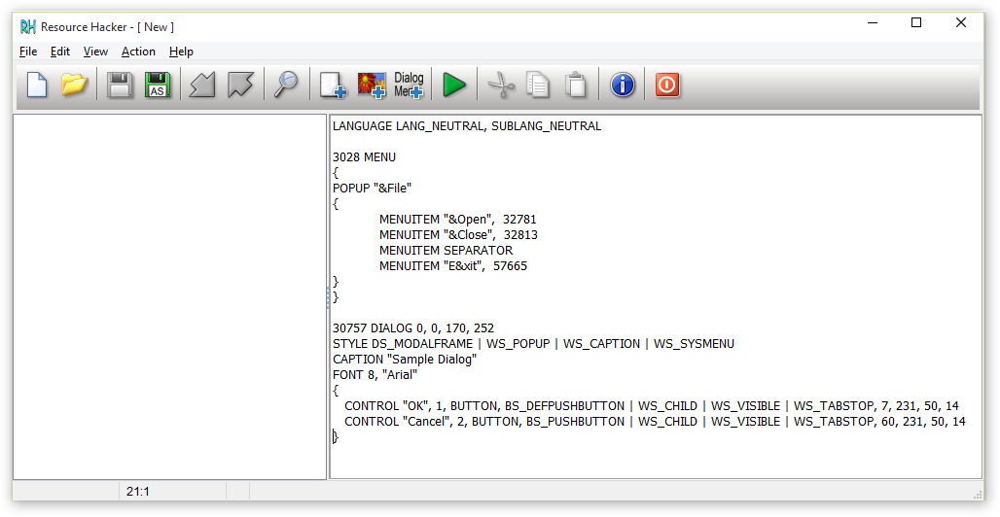
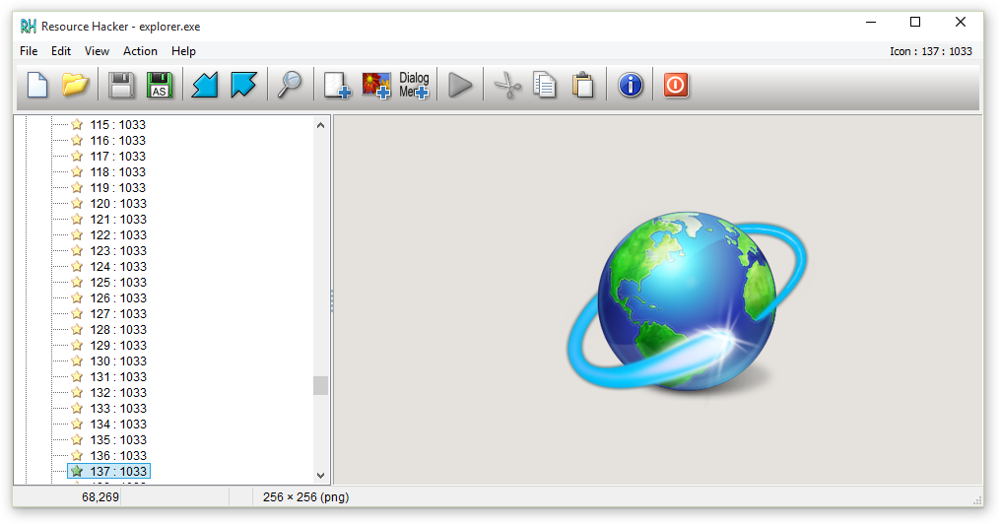
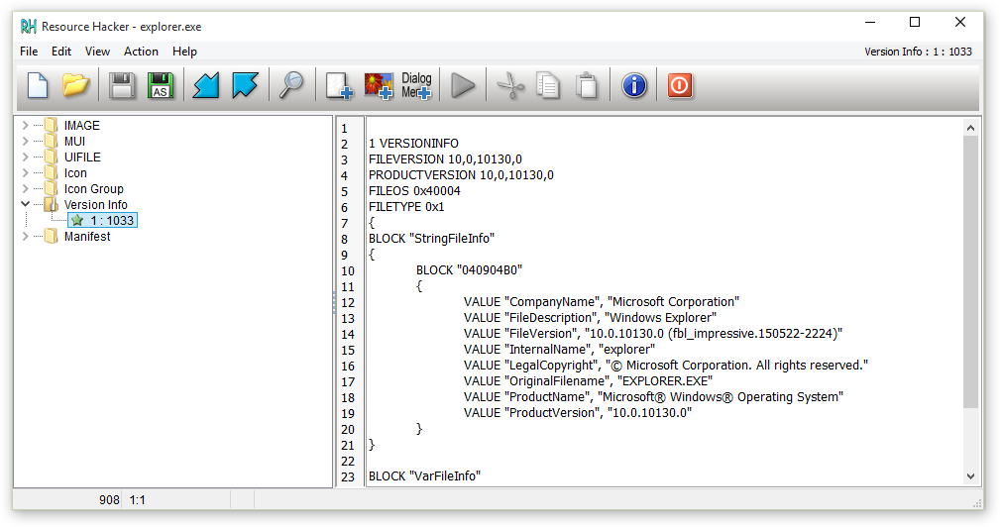
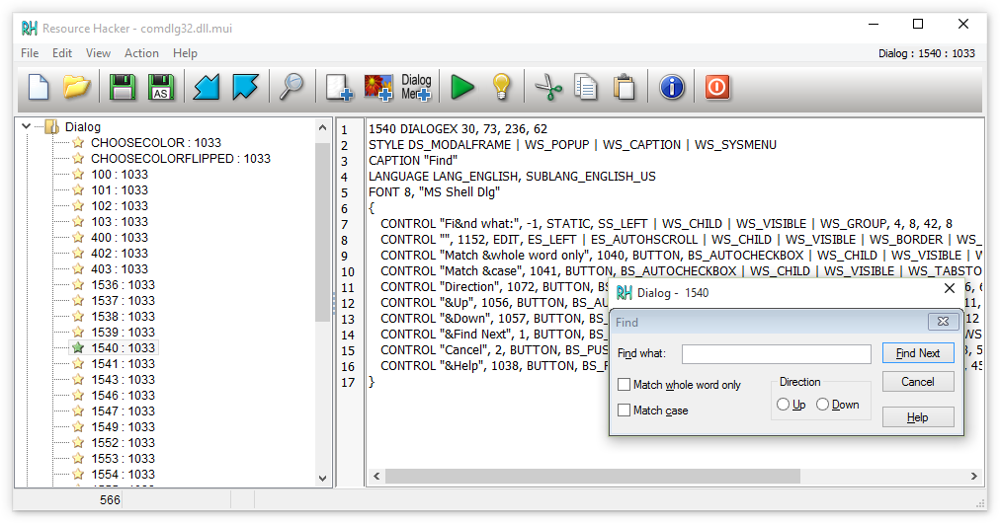
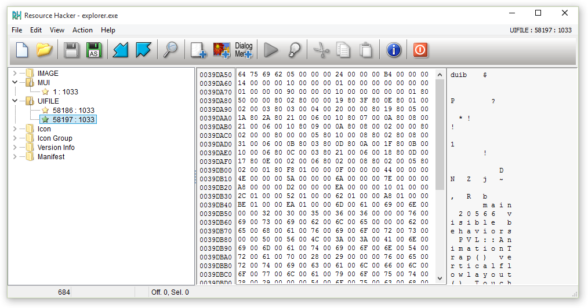
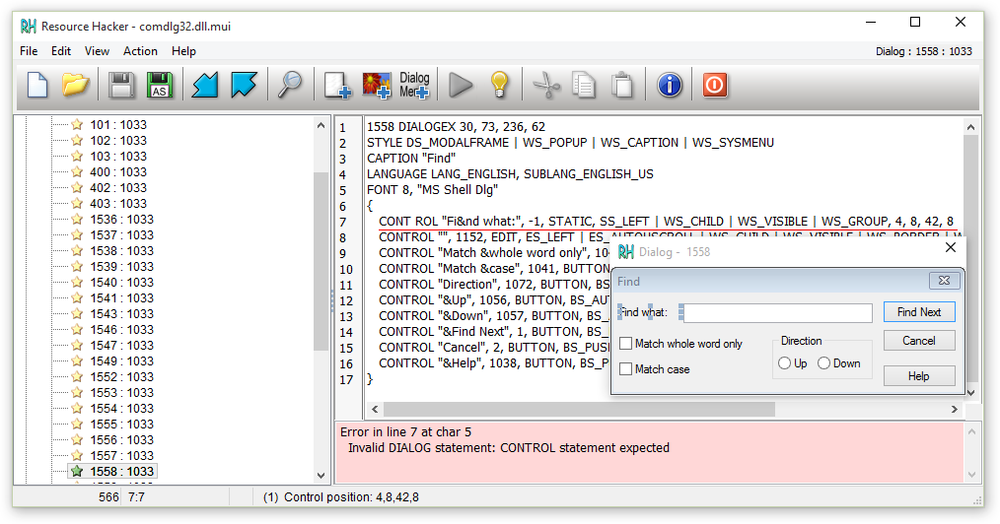
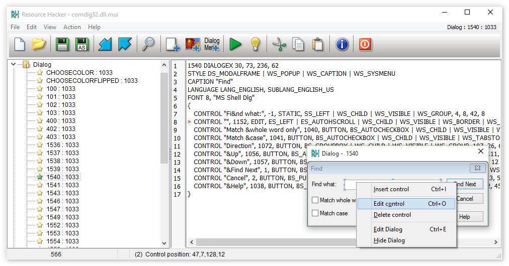
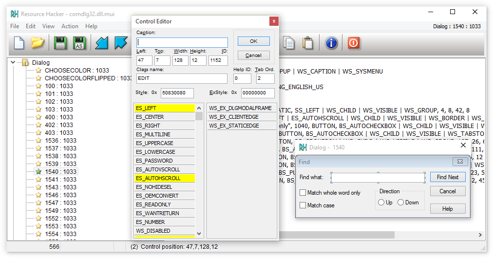
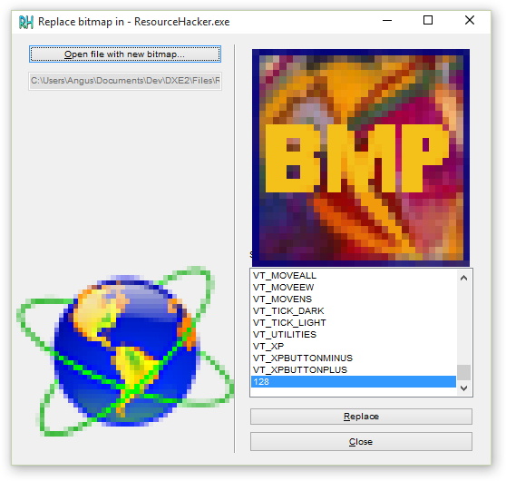

Resource Hacker™
Version 4.2.0Last updated: 20 June 2015
Copyright © 1999-2015 Angus Johnson
Freeware - no nags, no ads and fully functional.
Download
Overview:
Resource Hacker™ has been designed to be the complete resource editing tool: compiling, viewing, decompiling and recompiling resources for both 32bit and 64bit Windows executables. Resource Hacker™ can open any type of Windows executable (*.exe; *.dll; *.scr; *.mui etc) so that individual resources can be added modified or deleted within these files. Resource Hacker™ can create and compile resource script files (*.rc), and edit resource files (*.res) too.

Compiling:
Compiling can be initiated either by passing a resource script file as a parameter on the the command line (see below), or by using Resource Hacker's text editor.
Supported compiler directives include: #DEFINE, #UNDEF, #IF, #ELIF, #ELSE, #IFDEF, #IFNDEF, #INCLUDE, and #PRAGMA.
The #INCLUDE, #IF, and #IFDEF directives can all be nested to multiple levels.
Strings within resource statements are defined between double-quote (") characters. These strings can also contain typical 'C' style backslashed 'escaped' characters — \t , \n , \\ , \" , and \000 .. \377 (octal). A double-quote within a string can be 'escaped' by preceding it with either a backslash or with another double-quote character.
Script comments are preceded either by double forward-slashes (//) or by a semi-colon (;).
Filenames in within resource statements can only be parsed as strings, so they MUST be enclosed within double-quote characters otherwise compile errors will be raised.
A complete list of Resource-Definition Statements can be found here.

Viewing Resources:
Once a file has been opened, most resources will be displayed as either an image (or group of images) or as decompiled text:


However, some resource types will be displayed in both its compiled form (eg dialog or popup menu) and in its decompiled text format.

Some resource types can only be displayed as a dump of raw byte data:

Using the internal editor to modify text-based resources:
Dialog, menu, string-table, message-table, accelerators and Borland form resources can all be easily edited and recompiled using the internal resource editor.

Dialog controls can be visually resized and/or moved, with any changes being reflected in the resource script automatically. Conversion between screen pixels and dialog units is done automatically. Select a control by clicking it in the displayed dialog. Alternatively, the Tab or Shift-Tab keys can be used to select next or prior controls respectively. The selected control will show resizing handles. To move a control without resizing, once the control has been selected, click and drag it to its new location. The arrow keys can also be used to move a control once it has been selected. A control can be resized by clicking and dragging one of its resizing handles. Alternatively, the arrow keys combined with the shift key can be used to resize a control.
The Dialog Editor can be opened from the popup menu which is displayed by right-clicking the preview dialog. The Control Editor can be opened from the same menu once a control has been selected.


New controls can also be added. The Control Editor supports almost all of Microsoft’s standard and common control classes. User defined custom classes can also be added to the predefined list of classes by carefully editing the “Dialog.def” text file which can be found in the same folder as Resource Hacker™. Toolbar buttons enable selection of the most commonly used controls. The top-left corner of the control to be added will default to the point at which the dialog was originally right-clicked.
Replacing Images:
If the resource item to be replaced is an icon, cursor, or bitmap, the source can be an *.ico, *.cur or *.bmp file respectively or selected from a *.res or another *.exe file. Select Action|Replace Icon (Cursor or Bitmap) from the menu.

Command Line Scripting:
All the functionality of Resource Hacker™ can be accessed from the command line (apart from viewing resources) without having to open the Resource Hacker™ GUI.
Command line scripting can remove the drudgery entailed with repeating Resource Hacker™ tasks.
Command line syntax has 2 forms:
- Single commands: ResourceHacker.exe command command_parameters
- Multiple commands: ResourceHacker.exe -script multi_command_file (note that -script is very different to the -compile command, see below)
Single Commands:
command and command_parameters:
Notes:
Each command parameter must be separated by a comma, but no comma is expected before the first parameter.
Paths should be included with filenames.
Filenames containing spaces should be enclosed within double quotes.
The ResourceMask enables a command to be performed on either single or multiple resource items. It takes the form ResType,ResName,ResLang. (If ResType is a predefined type, then either its number or identifier can be used —e.g. the ResourceMask dialog,128,0 is identical to 5,128,0.) Any or all of the ResourceMask items can be omitted —e.g. dialog,, indicates that all dialogs are to be applied to the command irrespective of name or language, and ,,1049 indicates that all resources with Russian (1049) as the languageID will be applied to the command. An empty ResourceMask ,, indicates that the command will be applied to every resource irrespective of type, name or language.
When adding or modifying items, the ResourceFile can be a RES file for any item type, a BMP file for BITMAP types, a CUR file for CURSORGROUP types, an ICO file for ICONGROUP types, and any file type for RCDATA and user defined resource types.
When adding and modifying resources from files other than RES files then both ResType and ResName must be specified in the ResourceMask. If ResLang is omitted then the command applies to the first language item with matching type and name, otherwise, if no matching item exists then language neutral (0) is assumed.
When extracting resources, and more than one item is implied by the ResourceMask, then the specified ResourceFile must be either a RES file or an RC file. When binary image resources are extracted to RC files, each image is also created as a separate binary (ICO, CUR, BMP, GIF, BIN) file. See the example below.
ICON and CURSOR resources cannot be manipulated directly but are added, deleted, modified and extracted by using their respective ICONGROUP or CURSORGROUP. ICON and CURSOR can still be used but Resource Hacker™ will assume ICONGROUP or CURSORGROUP was intended.
All actions or errors are logged to “ResourceHacker.log”.
NB: If a script does not produce the desired results then check the log!
Examples: (File paths have been omitted for clarity)
syntax: ResourceHacker.exe -script ScriptFile
ScriptFile is a text file with the following layout:
If Log is omitted then the default log —ResourceHacker.log— will be used.
NB: If a script does not produce the desired results then check the log!
Examples:
Licence to Use - Terms and Conditions:command and command_parameters:
| -compile | resource_script.rc |
| -add | ExeFile, SaveAsFile, ResourceFile, ResourceMask |
| -addskip | ExeFile, SaveAsFile, ResourceFile, ResourceMask |
| -addoverwrite | ExeFile, SaveAsFile, ResourceFile, ResourceMask |
| -modify | ExeFile, SaveAsFile, ResourceFile, ResourceMask |
| -extract | ExeFile, ResourceFile, ResourceMask |
| -delete | ExeFile, SaveAsFile, ResourceMask |
Each command parameter must be separated by a comma, but no comma is expected before the first parameter.
Paths should be included with filenames.
Filenames containing spaces should be enclosed within double quotes.
The ResourceMask enables a command to be performed on either single or multiple resource items. It takes the form ResType,ResName,ResLang. (If ResType is a predefined type, then either its number or identifier can be used —e.g. the ResourceMask dialog,128,0 is identical to 5,128,0.) Any or all of the ResourceMask items can be omitted —e.g. dialog,, indicates that all dialogs are to be applied to the command irrespective of name or language, and ,,1049 indicates that all resources with Russian (1049) as the languageID will be applied to the command. An empty ResourceMask ,, indicates that the command will be applied to every resource irrespective of type, name or language.
When adding or modifying items, the ResourceFile can be a RES file for any item type, a BMP file for BITMAP types, a CUR file for CURSORGROUP types, an ICO file for ICONGROUP types, and any file type for RCDATA and user defined resource types.
When adding and modifying resources from files other than RES files then both ResType and ResName must be specified in the ResourceMask. If ResLang is omitted then the command applies to the first language item with matching type and name, otherwise, if no matching item exists then language neutral (0) is assumed.
When extracting resources, and more than one item is implied by the ResourceMask, then the specified ResourceFile must be either a RES file or an RC file. When binary image resources are extracted to RC files, each image is also created as a separate binary (ICO, CUR, BMP, GIF, BIN) file. See the example below.
ICON and CURSOR resources cannot be manipulated directly but are added, deleted, modified and extracted by using their respective ICONGROUP or CURSORGROUP. ICON and CURSOR can still be used but Resource Hacker™ will assume ICONGROUP or CURSORGROUP was intended.
All actions or errors are logged to “ResourceHacker.log”.
NB: If a script does not produce the desired results then check the log!
Examples: (File paths have been omitted for clarity)
To compile a resource script (from *.rc to *.res)
ResourceHacker.exe -compile my_resources.rc
To add or update dialog name:maindlg lang:0 in MyProg.exe from UpdDlg.res
ResourceHacker.exe -addoverwrite MyProg.exe, MyProgNew.exe, UpdDlg.res, dialog,maindlg,0
To add or update bitmap name:128 in MyProg.exe from NewImage.bmp
ResourceHacker.exe -addoverwrite MyProg.exe, MyProgNew.exe, NewImage.bmp , bitmap,128,
To add or update all bitmaps in MyProg.exe from Images.res
ResourceHacker.exe -addoverwrite MyProg.exe, MyProgNew.exe, Images.res, bitmap,,
To add a “user-defined” binary resource (README,1,0) to MyProg.exe from ReadMe.html
ResourceHacker.exe -addoverwrite MyProg.exe, MyProgNew.exe, ReadMe.html, readme,1,0
To add all items in Images.res to MyProg.exe (but fail if any item already exists)
ResourceHacker.exe -add MyProg.exe, MyProgNew.exe, Images.res ,,,
To add all items in Images.res to MyProg.exe (skipping any existing items)
ResourceHacker.exe -addskip MyProg.exe, MyProgNew.exe, Images.res ,,,
To modify all items in MyProg.exe with the items in Images.res (ignoring any items in Images.res which do not exist in MyProg.exe)
ResourceHacker.exe -modify MyProg.exe, MyProgNew.exe, Images.res , , ,
To extract all icons from MyProg.exe to MyProgIcons.rc (creating MyProgIcons.rc, Icon_1.ico, Icon_2.ico , Icon_3.ico etc...)
ResourceHacker.exe -extract MyProg.exe, MyProgIcons.rc, icongroup,,
To delete GIF name:128 from MyProg.exe
ResourceHacker.exe -delete MyProg.exe, MyProgNew.exe, gif,128,
Multiple Commands:ResourceHacker.exe -compile my_resources.rc
To add or update dialog name:maindlg lang:0 in MyProg.exe from UpdDlg.res
ResourceHacker.exe -addoverwrite MyProg.exe, MyProgNew.exe, UpdDlg.res, dialog,maindlg,0
To add or update bitmap name:128 in MyProg.exe from NewImage.bmp
ResourceHacker.exe -addoverwrite MyProg.exe, MyProgNew.exe, NewImage.bmp , bitmap,128,
To add or update all bitmaps in MyProg.exe from Images.res
ResourceHacker.exe -addoverwrite MyProg.exe, MyProgNew.exe, Images.res, bitmap,,
To add a “user-defined” binary resource (README,1,0) to MyProg.exe from ReadMe.html
ResourceHacker.exe -addoverwrite MyProg.exe, MyProgNew.exe, ReadMe.html, readme,1,0
To add all items in Images.res to MyProg.exe (but fail if any item already exists)
ResourceHacker.exe -add MyProg.exe, MyProgNew.exe, Images.res ,,,
To add all items in Images.res to MyProg.exe (skipping any existing items)
ResourceHacker.exe -addskip MyProg.exe, MyProgNew.exe, Images.res ,,,
To modify all items in MyProg.exe with the items in Images.res (ignoring any items in Images.res which do not exist in MyProg.exe)
ResourceHacker.exe -modify MyProg.exe, MyProgNew.exe, Images.res , , ,
To extract all icons from MyProg.exe to MyProgIcons.rc (creating MyProgIcons.rc, Icon_1.ico, Icon_2.ico , Icon_3.ico etc...)
ResourceHacker.exe -extract MyProg.exe, MyProgIcons.rc, icongroup,,
To delete GIF name:128 from MyProg.exe
ResourceHacker.exe -delete MyProg.exe, MyProgNew.exe, gif,128,
syntax: ResourceHacker.exe -script ScriptFile
ScriptFile is a text file with the following layout:
//comments are preceded by double slashes
[FILENAMES]
Exe=
SaveAs=
Log=
[COMMANDS]
-add ResourceSrc, ResourceMask
-addskip ResourceSrc, ResourceMask
-addoverwrite ResourceSrc, ResourceMask
-addoverwrite ResourceSrc, ResourceMask
-modify ResourceSrc, ResourceMask
-extract ResourceTgt, ResourceMask
-delete ResourceMask
If Log is omitted then the default log —ResourceHacker.log— will be used.
NB: If a script does not produce the desired results then check the log!
Examples:
rh_script_myprog_rus.txt -
//This script deletes all Language Neutral (0)
//string-table, menu and dialog resource items
//in MyProg.exe before replacing them
//with Russian (1049) items...
[FILENAMES]
Exe= MyProg.exe
SaveAs= MyProg_Rus.exe
Log= MyProg_Rus.log
[COMMANDS]
-delete MENU,,0
-delete DIALOG,,0
-delete STRINGTABLE,,0
-add MyProg_Rus.res, MENU,,1049
-add MyProg_Rus.res, DIALOG,,1049
-add MyProg_Rus.res, STRINGTABLE,,1049
rh_script_myprog_upd_images.txt -
//This script updates 2 bitmaps and an
//icon in MyProg.exe ...
[FILENAMES]
Exe= MyProg.exe
SaveAs= MyProg_Updated.exe
[COMMANDS]
-addoverwrite Bitmap128.bmp, BITMAP,128,
-addoverwrite Bitmap129.bmp, BITMAP,129,0
-addoverwrite MainIcon.ico, ICONGROUP,MAINICON,0
rh_script_myprog_upd_all.txt -
//This script replaces all resources
//in MyProg.exe with all the resources
//in MyProgNew.res
[FILENAMES]
Exe= MyProg.exe
SaveAs= MyProg_Updated.exe
[COMMANDS]
-delete ,,, //delete all resources before...
-add MyProgNew.res ,,, //adding all the new resources
This Resource HackerTM software is released as freeware provided that you agree to the following terms and conditions:
|
| The above licence terms constitute "copyright management information" within the meaning of Section 1202 of Title 17 of the United States Code and must not be altered or removed from the licensed works. Their alteration or removal from the licensed works, and the distribution of licensed works without all the above licence terms in an unaltered way, may contravene Section 1202 and give rise civil and/or criminal consequences. |
Executable Packers
| Some executable files are "packed" or "compressed" using compression algorithms after they have been compiled. While this reduces the size of these files, it also makes it more difficult to view and modify resources. While it's possilbe to reverse any compression and still view and modify resources, I've decided not to do that on the assumption that that would be disrespecting the intentions of the file authors. When a "compressed" executable is opened with Resource HackerTM only the types and names of resource will be visible. |
Download